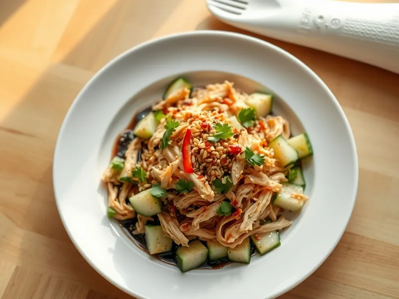

Салат с курицей и огурцами по-китайски
Отварная курица и битые огурцы в чесночно-соевой заправке с кунжутом
25 мин2 порц.289 ккал на порциюБ 39 · Ж 10 · У 10Азиатская кухня
Открыть в приложении: порции, таймеры, список покупок
Продукты на 2 порц.
- Куриное филе300 г
- Огурцы2 шт
- Чеснок2 зуб.
- Соевый соус2 ст. л.
- Рисовый уксус1 ст. л.
- Кунжутное масло2 ч. л.
- Сахар1 ч. л.
- Кунжут2 ч. л.
- Соль0,5 ч. л.
- Острый перец молотый по желанию1 щеп.
- Кинза по желаниюпо вкусу
Как готовить
- Опустите куриное филе в кипящую подсоленную воду и варите на слабом огне 15 минут, пока сок на разрезе не станет прозрачным. Остудите 5 минут.
- Пока варится курица, придавите огурцы плоской стороной ножа, чтобы они треснули, нарежьте кусочками 3 см, посыпьте щепоткой соли и оставьте на 10 минут.
- Смешайте соевый соус, рисовый уксус, кунжутное масло, сахар и выдавленный чеснок, размешайте до растворения сахара.
- Разберите курицу руками на волокна. Слейте выделившийся сок с огурцов.
- Соедините курицу и огурцы, полейте заправкой, перемешайте. Посыпьте кунжутом, хлопьями чили и кинзой.
Совет. Битые огурцы впитывают заправку лучше нарезанных. Курицу варите на слабом огне: при бурном кипении она получается сухой.